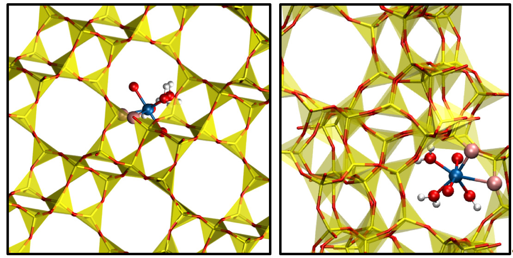

Selective Binding of Heavy Elements in Aqueous Media
Dr. Bess Vlaisavljevich
Research in heavy element chemistry is driven not only by applications in weapons and commercial energy production, but also by the environmental implications of these industries. Since the development of the actinide concept in the 1940s, global concern has risen in regards to the challenges of long-terms storage and the need for a true nuclear fuel cycle. Most notably, spent fuel rods generated from commercial nuclear reactors, waste from nuclear weapons production and dismantlement, and the clean-up of Cold War era storage sites all require an advanced understanding of the solution chemistry of the actinides and other fission products. While large scale separations of actinides emitting high doses of radiation and requiring shielded facilities are perhaps what one imagines when thinking of challenges facing the nuclear industry, analytical-scale separations of low concentrations of actinides are just as important both in the environment as well as in a complete nuclear fuel cycle.
Research in separations of actinide cations in solution has long history that has focused primarily on developing chelating ligands to separate similarly sized cations in solution. However, nanoporous materials can also selectively bind one ion over another. Zeolites are a class of water-stable nanoporous materials that have been used successfully for a wide variety of chemical separations. Zeolites are aluminosilicate minerals consisting of SiO4 and AlO4 groups that can be mined or synthesized in a wide variety of topologies (differing in the aluminum concentrations and the shapes of the channels and cages in the pore structure). Our work builds upon many studies on ion exchange zeolites where cations (e.g. alkali, alkali earth, and transition metal cations) bind within the nanopore. Zeolites have also been explored for separations relevant to the nuclear industry involving other fission products and are also known to adsorb the uranyl dication, [UO2]2+, the predominate form of uranium in water. Little is known about the preferred coordination of uranyl in the material and which zeolites are best suited for adsorbing uranyl selectively (Figure 1). Our research focuses on improving the fundamental understanding of how uranium binds to materials that, in the long-term, can be used to selectively bind uranium in the presence of other heavy metals in aqueous systems (whether naturally occurring, from mine runoff, or as a result of the use of uranium in nuclear energy) on an analytical scale. The specific objective of this project is to investigate uranyl adsorption in aluminosilicate ion-exchanged zeolites to provide molecular-level details regarding guest binding. The structural information obtained in this work will guide the design of favorable binding sites for uranyl. The combined use of periodic DFT and molecular simulations are well-suited to address these questions.

Figure 1. Example of uranyl (and its first solvation shell) bound to one of the tetrahedral sites in the CHA (left) and MFI (right) zeolites. Uranium in blue, silicon in yellow, oxygen in red, and hydrogen in blue. Oxygen atoms in the zeolite that coordinate with uranium shown in pink..